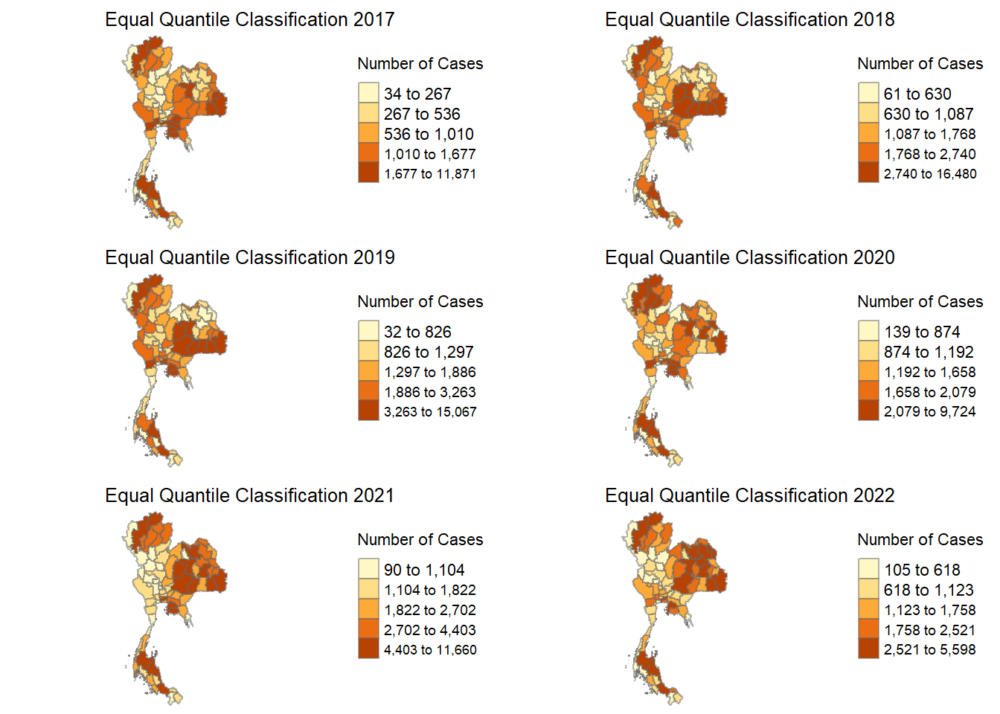
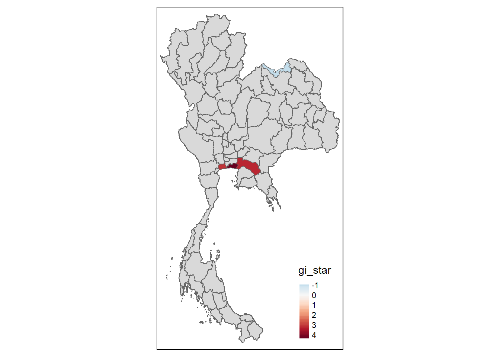

pacman:: p_load(sf, tmap, tidyverse, sfdep, spdep)Take-Home_Ex02
Introduction : Drug Abuse in Thailand
Drug abuse presents a persistent social challenge across Thailand, particularly among youth, with over 2.7 million individuals affected. Despite the country’s proximity to the Golden Triangle—a region notorious for drug production—drug use patterns display unexpected spatial variations. This analysis focuses on mapping drug use incidents across Thailand between 2017 and 2022, leveraging geospatial techniques to detect spatial clusters and trends. The overarching objective is to uncover the spatial dependence of drug abuse indicators and to explore how these patterns evolve over time.
The geopolitical location of Thailand, combined with its extensive transportation infrastructure, makes it both a market and a transit point for drug trafficking, especially for methamphetamines. This analysis will employ various spatial autocorrelation methods to investigate whether drug use cases exhibit any spatial dependence, followed by the identification of clusters, outliers, and potential hotspots. Additionally, this report will examine the evolution of drug-related offenses over the study period, with a particular focus on youth demographics.
Importing Packages
Importing Dataset into R environment
drug_offenses <- read_csv("data/thai_drug_offenses_2017_2022.csv") %>%
filter(types_of_drug_offenses == "drug_use_cases")Rows: 7392 Columns: 5
── Column specification ────────────────────────────────────────────────────────
Delimiter: ","
chr (3): types_of_drug_offenses, province_th, province_en
dbl (2): fiscal_year, no_cases
ℹ Use `spec()` to retrieve the full column specification for this data.
ℹ Specify the column types or set `show_col_types = FALSE` to quiet this message.drug_offenses <- drug_offenses %>%
mutate(province_en = case_when(
province_en == "buogkan" ~ "Bueng Kan",
province_en == "Loburi" ~ "Lop Buri",
TRUE ~ province_en
))Geospatial Data Wrangling
To conduct a comprehensive spatial analysis, we must first clean and join the various datasets related to drug abuse in Thailand. This involves handling two main data sources: the drug use offense records from 2017 to 2022 and administrative boundary shapefiles at the province level.
Data wrangling involves filtering and cleaning the datasets, ensuring compatibility between the province names in the two sources, and joining them to produce a unified dataset. This process is critical, as inconsistencies in geospatial data can lead to erroneous results in the spatial analysis. By joining the drug offense data with spatial features from the administrative boundaries, we create a spatial data frame ready for further analysis, with each observation linked to its respective geographic unit.
adm1 <- st_read("data/adm", layer = "tha_admbnda_adm1_rtsd_20220121")Reading layer `tha_admbnda_adm1_rtsd_20220121' from data source
`C:\endurrus\IS415-GAA\Take-Home_Ex\Take-Home_Ex02\data\adm'
using driver `ESRI Shapefile'
Simple feature collection with 77 features and 16 fields
Geometry type: MULTIPOLYGON
Dimension: XY
Bounding box: xmin: 97.34336 ymin: 5.613038 xmax: 105.637 ymax: 20.46507
Geodetic CRS: WGS 84drug_offenses_filtered <- drug_offenses %>% select(-province_th)
adm1_filtered <- adm1 %>% select(-ADM1_TH, -ADM1ALT1TH, -ADM1ALT2TH, -ADM0_TH)jointable <- left_join(drug_offenses_filtered, adm1_filtered, by = c("province_en" = "ADM1_EN"))summary(jointable) fiscal_year types_of_drug_offenses no_cases province_en
Min. :2017 Length:462 Min. : 32.0 Length:462
1st Qu.:2018 Class :character 1st Qu.: 798.2 Class :character
Median :2020 Mode :character Median : 1403.5 Mode :character
Mean :2020 Mean : 1981.7
3rd Qu.:2021 3rd Qu.: 2440.2
Max. :2022 Max. :16480.0
Shape_Leng Shape_Area ADM1_PCODE ADM1_REF
Min. : 1.024 Min. :0.03458 Length:462 Length:462
1st Qu.: 4.163 1st Qu.:0.29209 Class :character Class :character
Median : 5.463 Median :0.47344 Mode :character Mode :character
Mean : 5.726 Mean :0.56368
3rd Qu.: 7.200 3rd Qu.:0.80197
Max. :13.777 Max. :1.90055
ADM1ALT1EN ADM1ALT2EN ADM0_EN ADM0_PCODE
Length:462 Length:462 Length:462 Length:462
Class :character Class :character Class :character Class :character
Mode :character Mode :character Mode :character Mode :character
date validOn validTo
Min. :2019-02-18 Min. :2022-01-22 Min. :-001-11-30
1st Qu.:2019-02-18 1st Qu.:2022-01-22 1st Qu.:-001-11-30
Median :2019-02-18 Median :2022-01-22 Median :-001-11-30
Mean :2019-02-18 Mean :2022-01-22 Mean :-001-11-30
3rd Qu.:2019-02-18 3rd Qu.:2022-01-22 3rd Qu.:-001-11-30
Max. :2019-02-18 Max. :2022-01-22 Max. :-001-11-30
geometry
MULTIPOLYGON :462
epsg:4326 : 0
+proj=long...: 0
drugoff_sf <- st_as_sf(jointable)
st_crs(drugoff_sf) <- st_crs(adm1)
print(st_crs(drugoff_sf))Coordinate Reference System:
User input: WGS 84
wkt:
GEOGCRS["WGS 84",
DATUM["World Geodetic System 1984",
ELLIPSOID["WGS 84",6378137,298.257223563,
LENGTHUNIT["metre",1]]],
PRIMEM["Greenwich",0,
ANGLEUNIT["degree",0.0174532925199433]],
CS[ellipsoidal,2],
AXIS["latitude",north,
ORDER[1],
ANGLEUNIT["degree",0.0174532925199433]],
AXIS["longitude",east,
ORDER[2],
ANGLEUNIT["degree",0.0174532925199433]],
ID["EPSG",4326]]print(class(drugoff_sf$geometry))[1] "sfc_MULTIPOLYGON" "sfc" Visualization of Drug Use Trends (2017–2022)
One of the essential tasks in geospatial analysis is to visualize the data in an intuitive and informative way. This section focuses on geovisualization, where we map the number of drug use cases across Thailand for each year from 2017 to 2022. By using equal quantile classification, we can better understand the distribution of drug offenses across provinces and identify areas with higher and lower incidences. These visualizations allow us to observe spatial patterns over time and identify regions that are particularly affected.
Preliminary observations suggest that drug use is especially prevalent in the northeastern and southern regions of Thailand. Despite the proximity of the Golden Triangle in the northwest, fewer drug use cases appear in this region. This anomaly may be due to the fact that drugs are trafficked through northeastern provinces toward coastal regions, where they are then exported.
tmap_mode("plot")tmap mode set to plottingplots <- list()
for (i in 2017:2022){
p <- drugoff_sf %>%
filter(fiscal_year == i) %>%
tm_shape() +
tm_polygons("no_cases")
plots[[paste0("plot", i)]] <- p
}drugoff_list <- split(drugoff_sf, drugoff_sf$fiscal_year)tm_shape(drugoff_sf) +
tm_fill("no_cases",
n = 5,
style = "quantile") +
tm_borders(alpha = 0.5) +
tm_layout(main.title = "Equal quantile classification")Some legend labels were too wide. These labels have been resized to 0.61, 0.61, 0.56. Increase legend.width (argument of tm_layout) to make the legend wider and therefore the labels larger.It is evident that the northeastern and southern regions of Thailand exhibit the highest concentration of drug use cases. Interestingly, despite the proximity of the Golden Triangle—a well-known drug production area located in the northwest—this region shows relatively fewer drug use incidents. This disparity may be attributed to the fact that drug trafficking routes likely pass through the northeastern provinces en route to coastal ports for further distribution or export.
tmap_mode("plot")tmap mode set to plottingplot_list <- list()
for (year in names(drugoff_list)) {
p <- tm_shape(drugoff_list[[year]]) +
tm_fill("no_cases",
n = 5,
style = "quantile",
title = "Number of Cases") +
tm_borders(alpha = 0.5) +
tm_layout(main.title = paste("Equal Quantile Classification", year),
main.title.size = 0.8,
main.title.position = c("center", "top"),
frame = FALSE,
legend.outside = TRUE,
legend.outside.position = "right")
plot_list[[year]] <- p
}
tmap_arrange(plotlist = plot_list, ncol = 2, nrow = 3)Some legend labels were too wide. These labels have been resized to 0.59, 0.54. Increase legend.width (argument of tm_layout) to make the legend wider and therefore the labels larger.Some legend labels were too wide. These labels have been resized to 0.59, 0.59, 0.54. Increase legend.width (argument of tm_layout) to make the legend wider and therefore the labels larger.
Some legend labels were too wide. These labels have been resized to 0.59, 0.59, 0.54. Increase legend.width (argument of tm_layout) to make the legend wider and therefore the labels larger.Some legend labels were too wide. These labels have been resized to 0.59, 0.59, 0.59. Increase legend.width (argument of tm_layout) to make the legend wider and therefore the labels larger.Some legend labels were too wide. These labels have been resized to 0.59, 0.59, 0.59, 0.54. Increase legend.width (argument of tm_layout) to make the legend wider and therefore the labels larger.Some legend labels were too wide. These labels have been resized to 0.59, 0.59, 0.59. Increase legend.width (argument of tm_layout) to make the legend wider and therefore the labels larger.
The data indicates that drug use was notably high from 2017 to 2019, but a decline is observed starting in 2020. This reduction in cases may potentially be linked to the impact of the COVID-19 pandemic, which could have disrupted drug trafficking routes, law enforcement activities, or access to drugs during this period.
Drug Use Cases for 2018
Filtering and Preparing the 2018 Data
We first retrieve data for drug use cases from the year 2018. The data is stored as a list, and this specific index extracts the 2018 subset for further analysis. The goal is to conduct spatial analysis for this year’s drug use cases.
drugoff_list[[2]]Simple feature collection with 77 features and 15 fields
Geometry type: MULTIPOLYGON
Dimension: XY
Bounding box: xmin: 97.34336 ymin: 5.613038 xmax: 105.637 ymax: 20.46507
Geodetic CRS: WGS 84
# A tibble: 77 × 16
fiscal_year types_of_drug_offenses no_cases province_en Shape_Leng Shape_Area
<dbl> <chr> <dbl> <chr> <dbl> <dbl>
1 2018 drug_use_cases 16480 Bangkok 2.42 0.131
2 2018 drug_use_cases 422 Chai Nat 2.90 0.209
3 2018 drug_use_cases 1661 Nonthaburi 1.25 0.0532
4 2018 drug_use_cases 1823 Pathum Tha… 1.88 0.127
5 2018 drug_use_cases 1123 Phra Nakho… 3.04 0.214
6 2018 drug_use_cases 1850 Lop Buri 5.69 0.546
7 2018 drug_use_cases 3015 Samut Prak… 1.70 0.0793
8 2018 drug_use_cases 628 Saraburi 4.77 0.292
9 2018 drug_use_cases 402 Sing Buri 1.78 0.0687
10 2018 drug_use_cases 660 Ang Thong 1.74 0.0792
# ℹ 67 more rows
# ℹ 10 more variables: ADM1_PCODE <chr>, ADM1_REF <chr>, ADM1ALT1EN <chr>,
# ADM1ALT2EN <chr>, ADM0_EN <chr>, ADM0_PCODE <chr>, date <date>,
# validOn <date>, validTo <date>, geometry <MULTIPOLYGON [°]>Generating Contiguity Neighbors
Here, we compute the contiguity neighbors for the 2018 dataset. The function st_contiguity calculates which geographical units (provinces) share boundaries, storing this spatial relationship in the nb column. This neighbor information is essential for the subsequent spatial autocorrelation analysis.
A specific geometry without neighbors is manually assigned the nearest neighboring geometry to ensure proper spatial analysis.
Spatial weights are computed for each province based on the contiguity information. The st_weights function calculates weights following the “W” style (row-standardized), which is crucial for the spatial autocorrelation measures to follow.
wm_q_du18 <- drugoff_list[[2]] %>%
mutate(nb = st_contiguity(geometry))Warning: There were 2 warnings in `stopifnot()`.
The first warning was:
ℹ In argument: `nb = st_contiguity(geometry)`.
Caused by warning in `spdep::poly2nb()`:
! some observations have no neighbours;
if this seems unexpected, try increasing the snap argument.
ℹ Run `dplyr::last_dplyr_warnings()` to see the 1 remaining warning.empty_index <- 68
nearest_index <- 67
wm_q_du18$nb[[empty_index]] <- as.integer(nearest_index)
wm_q_DUC18 <- wm_q_du18 %>%
mutate(wt = st_weights(nb, style = "W"),
.before = 1)Moran’s I: Global Spatial Autocorrelation
Moran’s I, a global measure of spatial autocorrelation, which indicates whether drug use cases in one province are spatially clustered or dispersed, is calculated. The global_moran function applies this test, and the glimpse function gives an overview of the resulting statistics.
moranI_DUC18 <- global_moran(wm_q_DUC18$no_cases, wm_q_DUC18$nb, wm_q_DUC18$wt)
glimpse(moranI_DUC18)List of 2
$ I: num 0.0952
$ K: num 27Moran’s I Permutation Test
A permutation test for Moran’s I is run to assess the statistical significance of the observed spatial autocorrelation. By setting a seed value and running 99 simulations, we can compare the observed Moran’s I with a distribution of random outcomes, enhancing the robustness of the results.
global_moran_test(wm_q_DUC18$no_cases, wm_q_DUC18$nb, wm_q_DUC18$wt)
Moran I test under randomisation
data: x
weights: listw
Moran I statistic standard deviate = 1.7246, p-value = 0.0423
alternative hypothesis: greater
sample estimates:
Moran I statistic Expectation Variance
0.095202524 -0.013157895 0.003947668 set.seed(777)global_moran_perm(wm_q_DUC18$no_cases, wm_q_DUC18$nb, wm_q_DUC18$wt, nsim = 99)
Monte-Carlo simulation of Moran I
data: x
weights: listw
number of simulations + 1: 100
statistic = 0.095203, observed rank = 92, p-value = 0.16
alternative hypothesis: two.sidedLocal Moran’s I Analysis (LISA)
Local Moran’s I (LISA) is calculated to identify specific regions (provinces) where drug use cases are significantly clustered. Each province receives a local statistic measuring its spatial relationship with neighboring provinces. This local autocorrelation analysis helps pinpoint “hotspots” of high drug use.
lisa_DUC18 <- wm_q_DUC18 %>%
mutate(local_moran = local_moran(no_cases, nb, wt, nsim = 99),
.before = 1) %>%
unnest(local_moran)Visualization of Local Moran’s I
The results of the Local Moran’s I analysis are visualized. The first map shows the clustering intensity of drug use cases, while the second map displays the corresponding p-values. Areas with significant local autocorrelation are highlighted, offering insights into specific regions with notable drug activity.
tmap_mode("plot")tmap mode set to plottingmap1 <- tm_shape(lisa_DUC18) +
tm_fill("ii") +
tm_borders(alpha = 0.5) +
tm_view(set.zoom.limits = c(6,8)) +
tm_layout(main.title = "Local Moran's I of no_cases",
main.title.size = 0.8)
map2 <- tm_shape(lisa_DUC18) +
tm_fill("p_ii",
breaks = c(0, 0.001, 0.01, 0.05, 1),
labels = c("0.001", "0.01", "0.05", "Not sig")) +
tm_borders(alpha = 0.5) +
tm_layout(main.title = "p-value of local Moran's I",
main.title.size = 0.8)
tmap_arrange(map1, map2, ncol = 2)Variable(s) "ii" contains positive and negative values, so midpoint is set to 0. Set midpoint = NA to show the full spectrum of the color palette.Filtering Significant Results
Only provinces with statistically significant local Moran’s I values (p-value < 0.05) are filtered for further analysis. These regions are displayed on a map, highlighting the key areas where drug use cases are either clustered or dispersed.
lisa_sig_DUC18 <- lisa_DUC18 %>%
filter(p_ii < 0.05)
tmap_mode("plot")tmap mode set to plottingtm_shape(lisa_DUC18) +
tm_polygons() +
tm_borders(alpha = 0.5) +
tm_shape(lisa_sig_DUC18) +
tm_fill("mean") +
tm_borders(alpha = 0.4)Warning: One tm layer group has duplicated layer types, which are omitted. To
draw multiple layers of the same type, use multiple layer groups (i.e. specify
tm_shape prior to each of them).
Inverse Distance Weights
Inverse distance weights are calculated here to account for spatial relationships beyond just contiguity. This method emphasizes nearby locations more than distant ones and is used to enhance the local Gi* analysis in the next step.
wm_idw_DUC18 <- wm_q_du18 %>%
mutate(wts = st_inverse_distance(nb, geometry,
scale = 1,
alpha = 1),
.before = 1)! Polygon provided. Using point on surface.Warning: There was 1 warning in `stopifnot()`.
ℹ In argument: `wts = st_inverse_distance(nb, geometry, scale = 1, alpha = 1)`.
Caused by warning in `st_point_on_surface.sfc()`:
! st_point_on_surface may not give correct results for longitude/latitude dataLocal Gi* Analysis
The local Gi* statistic is computed to detect “hot” or “cold” spots of drug use cases. This method identifies clusters where provinces either have significantly higher or lower drug use compared to their neighbors. These clusters can indicate concentrated areas of drug problems or effective control.
HCSA_DUC18 <- wm_idw_DUC18 %>%
mutate(local_Gi = local_gstar_perm(
no_cases, nb, wt, nsim = 99),
.before = 1) %>%
unnest(local_Gi)
HCSA_DUC18Simple feature collection with 77 features and 27 fields
Geometry type: MULTIPOLYGON
Dimension: XY
Bounding box: xmin: 97.34336 ymin: 5.613038 xmax: 105.637 ymax: 20.46507
Geodetic CRS: WGS 84
# A tibble: 77 × 28
gi_star cluster e_gi var_gi std_dev p_value p_sim p_folded_sim skewness
<dbl> <fct> <dbl> <dbl> <dbl> <dbl> <dbl> <dbl> <dbl>
1 2.71 High 0.0259 0.0000118 0.482 6.30e-1 0.5 0.25 0.821
2 -1.28 Low 0.0125 0.0000522 -1.08 2.81e-1 0.06 0.03 1.96
3 3.01 Low 0.0126 0.0000396 3.15 1.62e-3 0.08 0.04 1.95
4 2.18 Low 0.0121 0.0000195 2.85 4.39e-3 0.1 0.05 1.64
5 -0.552 Low 0.0130 0.0000314 -0.490 6.24e-1 0.76 0.38 1.54
6 -0.373 Low 0.0127 0.0000234 -0.296 7.67e-1 0.92 0.46 1.84
7 4.30 High 0.0150 0.0000473 4.99 6.13e-7 0.04 0.02 3.16
8 0.0122 Low 0.0113 0.0000288 0.323 7.47e-1 0.5 0.25 1.71
9 -1.15 Low 0.0113 0.0000323 -0.884 3.77e-1 0.32 0.16 1.68
10 -0.833 Low 0.0117 0.0000347 -0.701 4.83e-1 0.48 0.24 1.52
# ℹ 67 more rows
# ℹ 19 more variables: kurtosis <dbl>, wts <list>, fiscal_year <dbl>,
# types_of_drug_offenses <chr>, no_cases <dbl>, province_en <chr>,
# Shape_Leng <dbl>, Shape_Area <dbl>, ADM1_PCODE <chr>, ADM1_REF <chr>,
# ADM1ALT1EN <chr>, ADM1ALT2EN <chr>, ADM0_EN <chr>, ADM0_PCODE <chr>,
# date <date>, validOn <date>, validTo <date>, geometry <MULTIPOLYGON [°]>,
# nb <nb>Visualizing Local Gi* Results
The Local Gi* analysis results are visualized in two maps: one showing Gi* values and the other displaying p-values. These maps help identify significant spatial clusters, highlighting areas with abnormal drug use case patterns for deeper investigation.
tmap_mode("plot")tmap mode set to plottingtm_shape(HCSA_DUC18) +
tm_fill("gi_star", palette = "-RdBu", style = "cont") +
tm_borders(alpha = 0.5) +
tm_view(set.zoom.limits = c(6,8))Variable(s) "gi_star" contains positive and negative values, so midpoint is set to 0. Set midpoint = NA to show the full spectrum of the color palette.tmap_mode("plot")tmap mode set to plottingtm_shape(HCSA_DUC18) + tm_fill("p_sim") + tm_borders(alpha = 0.5)
tmap_mode("plot")tmap mode set to plottingmap1 <- tm_shape(HCSA_DUC18) +
tm_fill("gi_star", palette = "-RdBu", style = "cont") +
tm_borders(alpha = 0.5) +
tm_view(set.zoom.limits = c(6,8)) +
tm_layout(main.title = "Gi* of GDPPC",
main.title.size = 0.8)
map2 <- tm_shape(HCSA_DUC18) +
tm_fill("p_value",
breaks = c(0, 0.001, 0.01, 0.05, 1),
labels = c("0.001", "0.01", "0.05", "Not sig")) +
tm_borders(alpha = 0.5) +
tm_layout(main.title = "p-value of Gi*",
main.title.size = 0.8)
tmap_arrange(map1, map2, ncol = 2)Variable(s) "gi_star" contains positive and negative values, so midpoint is set to 0. Set midpoint = NA to show the full spectrum of the color palette.
Significant Gi* Results
The final step filters provinces where the Gi* statistic is significant (p-value < 0.05). These significant regions are displayed on a map, offering an overview of “hot” and “cold” spots in drug use across Thailand in 2018.
HCSA_sig_DUC18 <- HCSA_DUC18 %>%
filter(p_sim < 0.05)
tmap_mode("plot")tmap mode set to plottingtm_shape(HCSA_DUC18) +
tm_polygons() +
tm_borders(alpha = 0.5) +
tm_shape(HCSA_sig_DUC18) +
tm_fill("gi_star", palette = "-RdBu", style = "cont") +
tm_borders(alpha = 0.4)Warning: One tm layer group has duplicated layer types, which are omitted. To
draw multiple layers of the same type, use multiple layer groups (i.e. specify
tm_shape prior to each of them).Variable(s) "gi_star" contains positive and negative values, so midpoint is set to 0. Set midpoint = NA to show the full spectrum of the color palette.